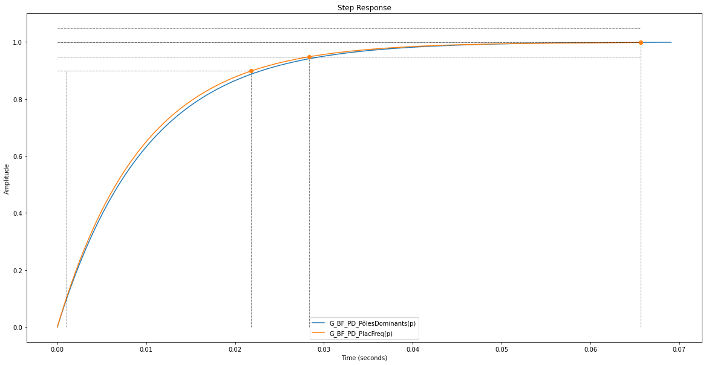
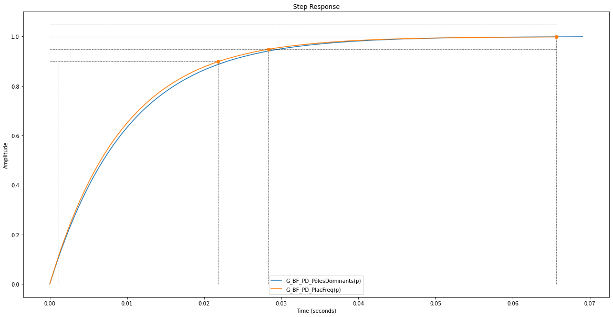

Séance 7¶
Objectif de la séance¶
Synthétiser tout ce qui a été appris durant les séances précédentes en résolvant un exercice récapitulatif
Exercices récapitulatifs¶
Exercice type examen¶
Soit le système asservi à retour unitaire suivant:
I.¶
Donnez les caractéristiques de performances typiques associées à sa réponse en boucle fermée si K=20.
(Précisez les relations, abaques et/ou calculs pour les obtenir ET vous validerez vos résultats à l’aide de l’affichage des réponses ad hoc via Python)
Mise sous forme canonique de la fonction de transfert du système en boucle ouverte:
Et voici la forme canonique de la fonction de transfert du système en boucle fermée:
Les caractéristiques de performances typiques associées à sa réponse en boucle fermée sont : Wn=4.472 rad/s zeta=0.280.
Erreur si le système est excité par une entrée de type échelon :
L'erreur de position vaut -0.0%.
Erreur si le système est excité par une entrée de type rampe :
L'erreur de vitesse du système vaut 12.50%.
Temps de réponse à 5% si le système est excité par une entrée de type échelon :
Le temps de réponse à 5% vaut 2.357s.
Amplitude en valeur absolue et instant du premier dépassement si le système est excité par une entrée de type échelon qui passe de 1 V à 3 V afin de vérifier si une tension d’alimentation de 5 V est possible :
L'amplitude du premier dépassement vaut 3.801 (->26.701%) et apparaît à 0.732s.
Cette amplitude étant inférieure à 5, une alimentation de 5V sera donc suffisante.
II.¶
Proposez un choix de valeurs pour les paramètres et donc pour K qui permette de respecter une marge de phase de 60° et vérifiez que dans ces conditions, le dépassement est bien ramené inférieur à 20 % :
Gain à -120° = -12.396689184358634 dB
Fréquence à -120° = 1.4434971860142058 rad/sec
K = 4.16710514923329
Si K = 4.167, la marge de phase vaut 60.00° comme demandé.
Si K = 4.167, le dépassement relatif vaut 8.721%, soit bien moins que les 20% tolérés.
III.¶
Dimensionnez un correcteur qui permette d’assurer une erreur de vitesse limitée à 1 % (tout en garantissant que le dépassement reste limité à 20 % pour la réponse indicielle) :
Type de correcteur : P, PI, PD ou PID ?
Nous avons un système de classe 1, on sait donc que son erreur de vitesse vaut \(\frac{1}{K_{BO}}\) (cf. p. 6-3). Dès lors, un simple correcteur P devrait à priori suffire.
Dimensionnement :
Correcteur P:
Vérification:
Si K = 250.000, le dépassement relatif vaut 78.052%, soit bien plus que les 20% tolérés.
L'erreur de vitesse du système vaut 1.00%.

Un correcteur P n’est donc pas suffisant vu que le dépassement engendré par celui-ci est supérieur aux 20% tolérés. Ils nous reste donc 3 autres correcteurs diponibles (PI, PD, PID).
Un correcteur PI n’aurait pas d’intérêt puisqu’il augmenterait la classe de notre système ce qui nous arrangerait au niveau de l’erreur de vitesse qui serait pas conséquent nulle (cf. p. 6-3) mais engendrerait un système moins stable, ce qui nous amènerait à prendre un K plus faible pour contrer cet effet néfaste (cf. p. 7-7) et nous obtiendrions du coup un système plus précis que ce qui est réclamé mais plus lent…
Un correcteur PD, par contre, aurait l’avantage d’améliorer la stabilité (cf. p. 7-13) du système et donc de diminuer ce dépassement. Nous allons donc choisir de dimensionner ce correcteur qui peut être dimensionné de deux manières:
Compensation du pôle dominant:
Il s’agit ici de la solution la plus simple puisque la fonction de transfert de notre système en boucle ouverte ne possède qu’un seul pôle lié à une constante de temps: (2p+5). Dès lors, il suffit de fixer \(\tau_D=\frac{2}{5}\) et nous nous retrouverons avec un système du premier ordre qui a l’avantage de ne présenter aucun dépassement! Nous nous retrouverons donc avec un système présentant une erreur de vitesse de 1% et un dépassement relatif nul.
Si K = 250.000 et tau_D = 0.4s, le dépassement relatif vaut 0.000%, soit bien moins que les 20% tolérés.
L'erreur de vitesse du système vaut 1.00%.
Placement fréquentiel:
L’avantage de cette solution est qu’elle nous permet de trouver (par essais-erreurs) un système qui présenterait pile un dépassement 20% tout en garantissant une erreur de vitesse de 1%. Nous allons tout de même voir ici ce que le choix de cette technique entraînerait comme résultat et nous le comparerons à ce que nous avons obtenu via la technique de compensation du pôle dominant.
Si K = 250.000, la marge de phase vaut 9.04°.
Si nous cherchons à obtenir une marge de phase de 84.960°, nous relevons un w_c de 149.251 rad/s => tau_D = 0.067s.
Le système ainsi corrigé présente une marge de phase de 60.95° et une marge de gain de inf dB.
Si K = 250.000 et tau_D = 0.067s, le dépassement relatif vaut 19.978%, soit juste un peu moins que les 20% tolérés.
Observons la différence de résultats entre les deux techniques:
Système corrigé par compensation du pôle dominant
-------------------------------------------------
DCGain : 0.9989999999999394
Overshoot : 0.0
Peak : 0.9989999999999394
PeakTime : 0.06907755278982136
RiseTime : 0.021885957319547362
SettlingTime : 0.02976849434656868
Système corrigé par placement fréquentiel
-----------------------------------------
DCGain : 1.0011449289842358
Overshoot : 19.978403441266423
Peak : 1.2011577019284867
PeakTime : 0.1571153461481759
RiseTime : 0.06438212219959515
SettlingTime : 0.2781996718457423
 

On remarque que la technique de compensation du pôle dominant est ici la plus efficace et ce, à tous les niveaux (facilitié de dimensionnement, rapidité et stabilité du système).
De plus, nous observons qu’un correcteur PID n’est pas nécessaire puisqu’un correcteur PD suffit pour corriger ce système afin qu’il présente une erreur de vitesse de 1% et un dépassement inférieur à 20%. Nous nous limiterons donc au correcteur PD dimensionné via la technique de compensation du pôle dominant.
Preuves qu’il ne vaudrait pas mieux choisir un PI:
Via la technique de compensation du pôle dominant
Le problème avec cette technique est qu’elle rend le système purement instable vu qu’on se retrouve avec un double pôle à l’origine sans autre pôle lié à une constante de temps. Le système présente donc un déphasage de -180° pour toute fréquence et passe donc par le point d’instabilité (0 dB, -180°).
Voici ce qu’on obtient si \(\tau_I=\frac{2}{5}\):
Via la technique du placement fréquentiel
Qui est donc la seule technique utilisable pour dimensionner un correcteur PI pour ce système pour les raisons expliquées au point précédent.
Si K = 2.000, la marge de phase vaut 9.04°.
Si nous cherchons à obtenir une marge de phase de 85.000°, nous relevons un w_c de 143.191 rad/s => tau_I = 4.889s (facteur multiplicatif d'1/w_c = 700).
Marge de phase du système original corrigé avec K = 72.986°
Marge de phase du système original corrigé par un correcteur PI = 57.952°
Dépassement du système original corrigé par un correcteur PI = 19.664%
L'erreur de vitesse du système vaut 0.00%.

[Facultatif] Exercice 3 page 7-27¶
Warning
Il y a une petite erreur dans le point 2 de la solution au niveau du terme indépendant au dénominateur qui devrait être égale à 1!
[Facultatif] Application 3 (cf. p. “application-4”)¶
Effectuez la résolution par programmation Python.
[Facultatif] Application 5 (cf. p. “application-8”)¶
Effectuez la résolution par programmation Python.